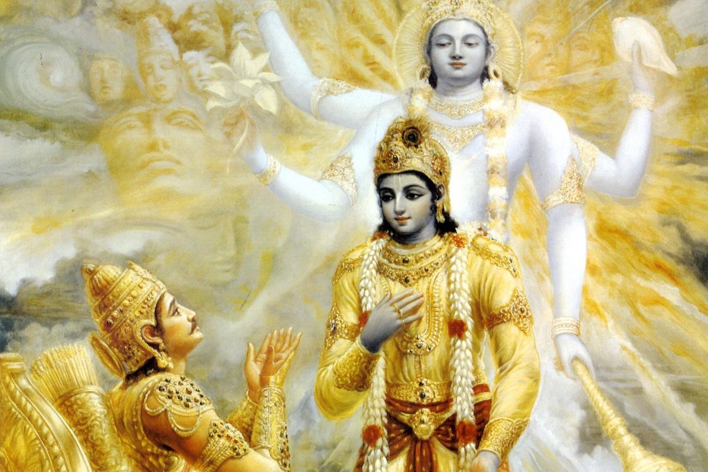
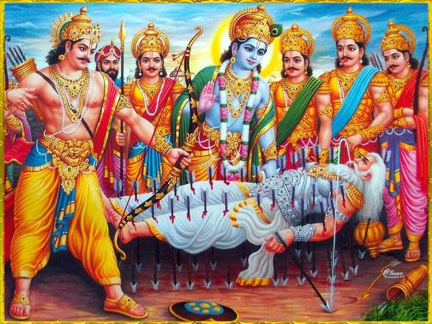
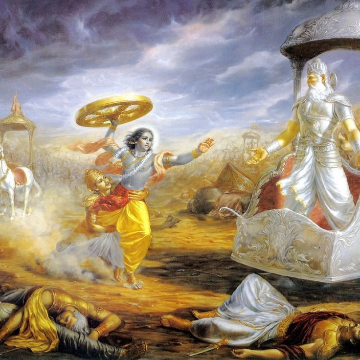
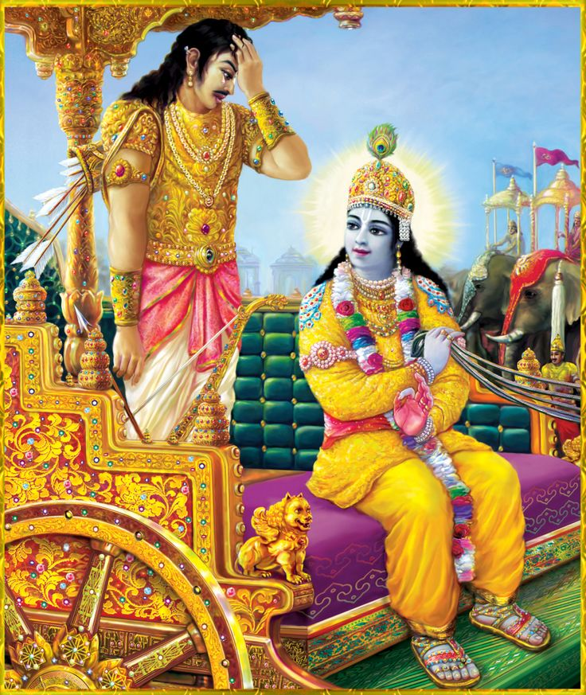
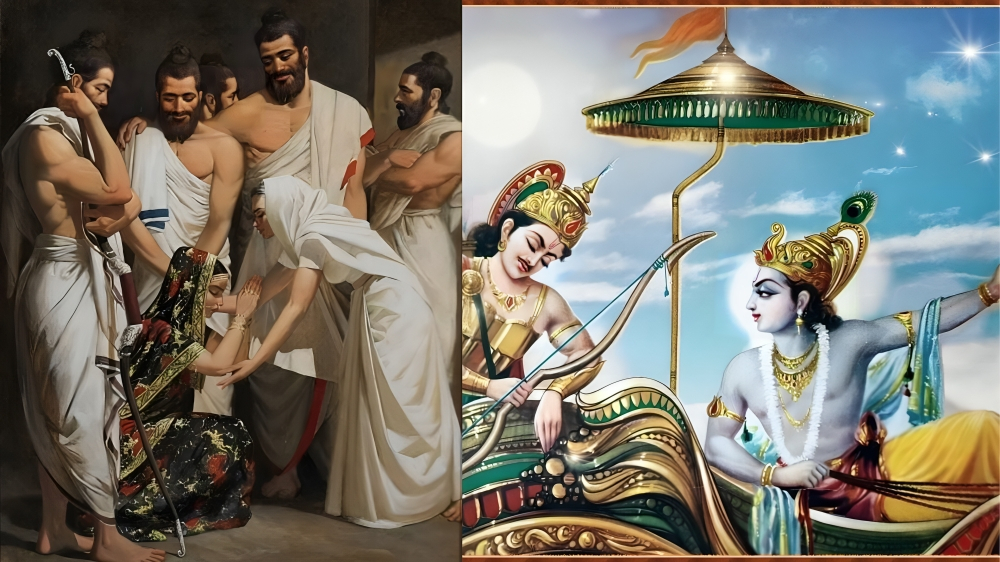
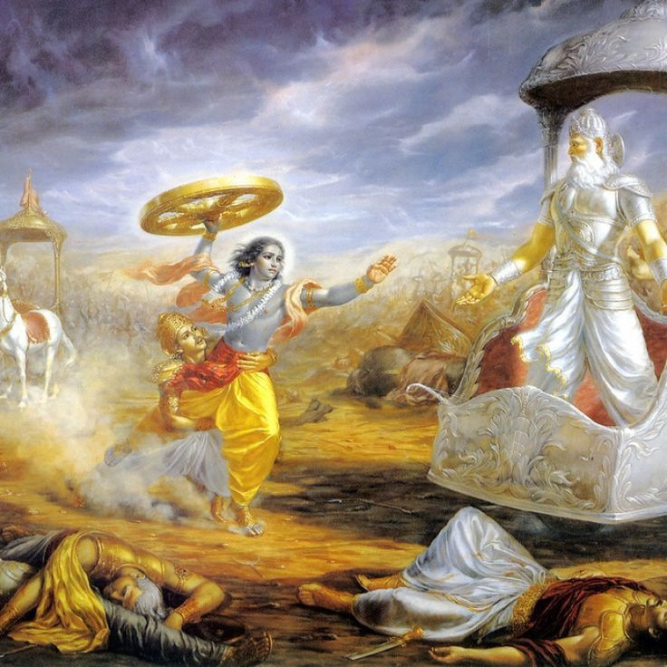
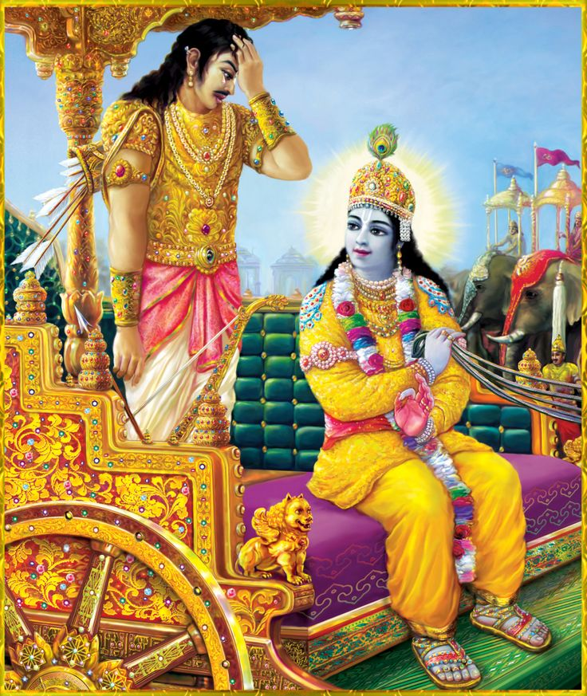
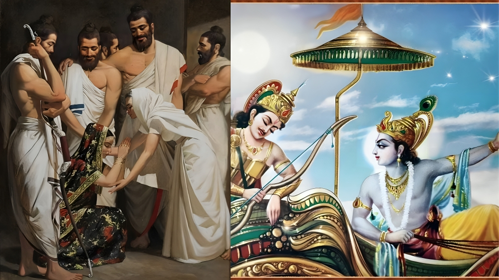

BHAGVAD GITA SHLOKS


 





Bhagavad Gita
The History of the Gita
by Swami B.V. Giri Mahārāja
Since time immemorial, the Bhagavad-gītā has been a prime source of inspiration for many great thinkers and philosophers in both the east and the west. In ancient times, the first commentary on the Gītā was written by Ādi Śaṅkara, who was the first ācārya to treat it as a freestanding text. Subsequently, other great ācāryas such as Rāmānuja, Madhva, Śrīdhara Svāmī and others wrote commentaries on the Gītā that presented its essential devotional significance, in stark contrast to Ādi Śaṅkara’s impersonal interpretation.
In the western world, the Bhagavad-gītā has been highly appreciated by erudite scholars and philosophers such as Henry David Thoreau, Friedrich Schlegel, Arthur Schopenhauer, Carl Jung and Herman Hesse. Upon reading the Gītā, the famous American transcendentalist, Ralph Waldo Emerson commented:
I owed a magnificent day to the Bhagavad-gītā. It was the first of books; it was as if an empire spoke to us, nothing small or unworthy, but large, serene, consistent, the voice of an old intelligence which in another age and climate had pondered and thus disposed of the same questions which exercise us. (Journals of Ralph Waldo Emerson)
Originally, the Bhagavad-gītā is part of the ancient historical epic, the Mahābhārata, composed by the great sage Vyāsa in approximately 3100 BCE. The eighteen chapters of the Bhagavad-gītā are found within the Sixth Canto of the Mahābhārata known as the Bhīṣma-parva, which altogether contains 117 chapters. Initially Vyāsa wrote the 8,800 core verses of the Mahābhārata and later his disciples Vaiśampāyana and Sūta added further historical details until the Mahābhārata finally consisted of 100,000 verses – seven times the size of Homer’s Illiad and fifteen times the size of the King James Bible.
The Bhagavad-gītā is spoken on the first day of the war at Kurukṣetra. As the two armies prepare to fight, the blind Dhṛtarāṣṭra sits in his court with his faithful servant Sañjaya and inquires from him as to what the virtuous Pāṇḍavas are doing. Sañjaya, a disciple of the great sage Vyāsa, had been blessed with the mystic power to observe the conflict far from the battlefield at the palace in Hastināpura. Sañjaya then narrates to the old emperor the sacred conversation between Śrī Kṛṣṇa and Arjuna. Thus the Bhagavad-gītā was received by Sañjaya and repeated to Dhṛtarāṣṭra for the spiritual benefit of all humanity.
The Contents of Bhagvad Gita are as follows:
- Preface to Bhagavad Gita
- Introduction to Bhagavad Gita
- The History of the Gita
- Mangalacarana of Bhagavad Gita
- Chapter 1 – Sainya-Darśana (Observing the Armies on the Battlefield)
- Chapter 2 – Sāṅkhya Yoga (The Yoga of Analysis)
- Chapter 3 – Karma Yoga (The Yoga of Action)
- Chapter 4 – Jñāna Yoga (The Yoga of Knowledge)
- Chapter 5 – Karma Sannyāsa Yoga (The Yoga of the Renunciation of Action)
- Chapter 6 – Dhyāna Yoga (The Yoga of Meditation)
- Chapter 7 – Jñāna-Vijñāna Yoga (The Yoga of Knowledge and Realisation)
- Chapter 8 – Tāraka-Brahma Yoga (The Yoga of the Supreme)
- Chapter 9 – Rāja Guhya Yoga (The Yoga of the Greatest Secret)
- Chapter 10 – Vibhūti Yoga (The Yoga of Divine Splendour)
- Chapter 12 – Bhakti Yoga (The Yoga of Devotion)
- Chapter 13 – Prakṛti-Puruṣa Viveka Yoga (The Yoga of Differentiation)
- Chapter 14 – Guṇa-Traya Vibhāga Yoga (The Yoga of Understanding the Three Modes of Material Nature)
- Chapter 15 – Puruṣottama Yoga (The Yoga of the Supreme Person)
- Chapter 16 – Daivāsura Sampad Vibhāga Yoga (The Yoga of Discretion-Pious and Impious Natures)
- Chapter 17 – Śraddhā-Traya Vibhāga Yoga (The Yoga Explaining Three Types of Faith)
- Chapter 18 – Mokṣa Yoga (The Yoga of Supreme Perfection)